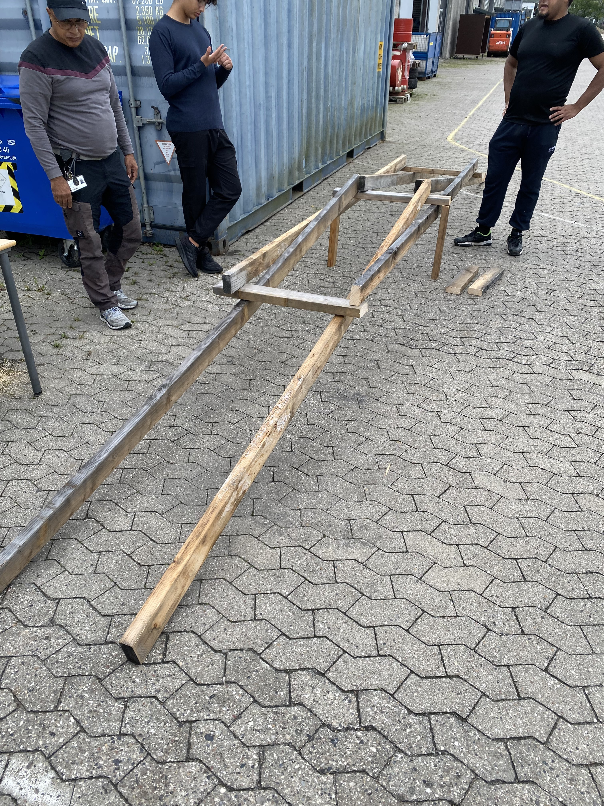

Prototype
3D Model
Timeline
D. 28 - August
- Formands- og Næstformandsudvælgelse: Vores projekt begyndte med at udvælge en formand og næstformand, der skulle lede vores bro opbygnings projekt.
- Holdopdeling: Vi organiserede os i to grupper. Den ene fokuserede på at designe og opbygge en hjemmeside, mens den anden arbejdede på at konceptualisere og måle området for en brokonstruktion.
- Halvvejs: I løbet af dagen nåede hjemmesideholdet en imponerende milepæl ved at skabe en halvfærdig version af vores hjemmeside, der allerede indeholdt en betydelig mængde information.
- Brodesign og Målinger: Samtidig gik broholdet i gang med at udforske brodesign og foretage nøjagtige målinger af åens dimensioner for at forberede brokonstruktionen.
Dette en-dags projekt den 28. august 2023 var en intensiv og produktiv oplevelse, hvor vi demonstrerede teamwork og evnen til hurtigt at nå mål. Selv på kort tid opnåede vi betydelige fremskridt på både hjemmeside- og brofronten.

D. 29 - August
- Hjemmeside Færdiggørelse: På denne dag var vores hjemmeside klar til at implementere 3D-figurer, billeder og tekst for at skabe det endelige produkt. Den omfattende information var klar til at blive præsenteret på en engagerende måde.
- Brodesign Afsluttet: Broens design var fuldført, og vi havde nu identificeret de nødvendige materialer til brokonstruktionen baseret på vores grundige målinger og analyser.
Vores Bro projekt den 28. og 29. august 2023 var en bemærkelsesværdig rejse med betydningsfulde fremskridt inden for både hjemmesideudvikling og brodesign. Vi er stolte af det hurtige tempo og den dedikation, der blev udvist af vores projektteam.
D. 30 - August
- Formands- og Næstformandsudvælgelse: Vores projekt begyndte med at udvælge en formand og næstformand, der skulle lede vores bro opbygnings projekt.
- Holdopdeling: Vi organiserede os i to grupper. Den ene fokuserede på at designe og opbygge en hjemmeside, mens den anden arbejdede på at konceptualisere og måle området for en brokonstruktion.
- Halvvejs: I løbet af dagen nåede hjemmesideholdet en imponerende milepæl ved at skabe en halvfærdig version af vores hjemmeside, der allerede indeholdt en betydelig mængde information.
- Brodesign og Målinger: Samtidig gik broholdet i gang med at udforske brodesign og foretage nøjagtige målinger af åens dimensioner for at forberede brokonstruktionen.
Dette en-dags projekt den 28. august 2023 var en intensiv og produktiv oplevelse, hvor vi demonstrerede teamwork og evnen til hurtigt at nå mål. Selv på kort tid opnåede vi betydelige fremskridt på både hjemmeside- og brofronten.